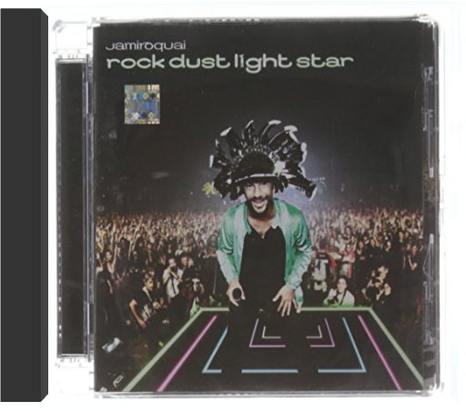

 rock dust light starjamiroquai  2010 release, the seventh album from British Jazz Funk pioneers Jamiroquai. Fronted by the charismatic Jay Kay, this is the band's first album in five years, following Dynamite with the kind of catchiness that made Jamiroquai a household name. Recorded between Buckinghamshire, Oxfordshire, and Thailand, Rock Dust Light Star features the single 'Blue Skies', a Take That-esque uplifting pop song - a departure from tracks such as 'Space Cowboy'. This record shows the group's talent remains as strong in 2010 as it was in 1994.  Avec ses tresses et sa silhouette filiforme, Jeanne Cherhal a l'air d'une étudiante tout droit sortie d'un collège pour jeunes filles de bonne famille. Mais voyez comme les apparences sont trompeuses. C'est à une artiste de tempérament que nous avons affaire. Et elle ne manque pas de l'afficher en grande largeur dans ce premier album enregistré en public à l'Olympic de Nantes. Fougueuse, espiègle, extravertie, on se retrouve à court de qualificatifs pour définir cette Nantaise qui n'a pas la langue dans sa poche et qui balance mots et notes sans demi-mesure, avec pour seul soutien les touches de son piano. Et elle en a des choses à dire, la Jeanne. Particulièrement sur les us et coutumes de ses contemporains qu'elle ne ménage pas vraiment. Elle joue à merveille de sa voix explosive pour dénoncer l'hypocrisie ("Sans titre"), la marée noire ("Donges"), les histoires de famille ("Madame Suzie", "La Famille"), les complexes non assumés, les expériences sexuelles ratées ("Mes problèmes de relation") ou la bonne bourgeoisie ("Les Berceaux brodés"). On appelle ça une femme de caractère... —José Ruiz  Elle revendique l'influence de Jacques Higelin, et son deuxième album témoigne d'une exceptionnelle maturité. Nombreux y sont les thèmes abordés, l'amour évidemment, mais aussi la mort, ou de façon plus générale la nostalgie. Humour et fluidité caractérisent des textes malins servis par des arrangements sophistiqués où le jazz et le violoncelle de Vincent Segal pointent leur nez. On pensera également à Mathieu Chédid qui, d'ailleurs comme Higelin, fait une apparition remarquée. Un opus humble vers lequel il fait bon revenir. —Hervé Comte |  John Coltrane enregistre beaucoup en octobre 1960. Trois séances de studio vont lui permettre de sortir trois albums. My Favorite Things est l'un d'entre eux. Depuis le début de l'été Coltrane possède un nouveau quartette, le bon, celui qui lui permettra d'aller plus loin, jusqu'au bout de sa quête. Il travaille aussi le soprano, un instrument qui lui rappelle l'Afrique et abandonne les gammes majeures et mineures pour improviser sur des modes, ce que font depuis des siècles les musiciens arabes, africains et indiens. Depuis mai, il joue souvent à la Jazz Gallery, un nouveau club de New York. Un soir, un habitué du lieu lui tend une partition, celle de "My Favorite Things", une valse écrite par Richard Rogers et qu'interprète Julie Andrews dans la comédie musicale du même nom. Séduit, Coltrane l'enregistre au soprano, lui donnant le son nasillard du zoukra, sorte de hautbois d'Afrique du Nord. Ce thème, qu'il reprendra souvent, fait partie de sa légende. —Pierre de Chocqueuse  One of the most important jazz albums of all time, and a must for every collection! Originally released in 1960. Warner Jazz. 2005. |

Julien
Collection Total:
2 025 Items
2 025 Items
Last Updated:
Dec 25, 2023
Dec 25, 2023


 Made with Delicious Library
Made with Delicious Library